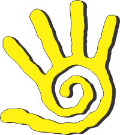
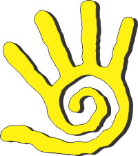

Divine Massage Therapy

Divine Massage Therapy


What to Expect During The Therapy?
Divine Massage Therapy is a natural form of healing facilitated directly through the hands of the therapist. During the therapy, along with complete diagnostics, every client receives a general and precise therapeutic massage, passive workout, gentle manual treatment of the spine, pelvis, hips, and a gentle manipulation of the joints throughout the entire body.
Each session begins with an easy warm up of the body through stretching exercises, enacted through the pressure of the palms, elbows, forearms, knees and soles of the therapist. All workout procedures push to the maximum physical limit of the client’s natural stretch ability and pain threshold.
During other parts of the massage, all acupressure points along the meridians of the body are stimulated and manipulations of the joints are done to eliminate blockages in the joints. Manipulation refers to the expert therapeutic practice by which a joint is driven back into its normal position, achieved by a short, sudden jerking movement, which is usually accompanied by a characteristic ‘popping’ sound.
Although Divine Massage Therapy is based on already well-established principles, the execution of the therapy is different for each patient, with the approach being catered specifically to each unique individual. In practice, the therapist adapts to different sensibilities and the duration of the massage may vary.
During the session, the client remains fully clothed, on the floor and lying on the mat; aside from a few interventions performed in a sitting, standing or kneeling position. Loose-fitting clothing made from natural fiber or cotton is required.
Depending on the specific problem, clients will need from 3 to 10 treatments to achieve the maximum benefit. However, if the patient has greater issues, additional treatments may be necessary, depending on how the body reacts.
Treatment sessions usually last for approximately one hour, depending on the complexity of the patient's problems. After each session, the patient is advised to drink plenty of water after the treatment (as well as in general).
Who Can Benefit from This Therapy?
Divine Massage Therapy is an enormous help to athletes because it relaxes the muscles, increases blood circulation and solves problems with ligaments and joints. The same goes for older people – therapy can solve problems involving weak circulation, low physical activity, bad posture and other life-long accumulated problems.
Unfortunately, most people often come only after problems have already manifested themselves and when something starts to hurt. However, the best possible impact of the therapy can be expected if it is performed as a preventative measure.

For Children and Expectant Mothers
Divine Massage Therapy can also be performed on young children, from 4 months and up; if parents notice any asymmetry in the position of the body or, for instance, curvature of the head towards one side.
Such problems with young children can be solved in 2 or 3 treatments. The organism of a child reacts extraordinarily fast to the therapy, and for easier problems children usually need only 1 treatment, while adults tend to need more.
This therapy is also recommended for scoliosis posture, which is often an issue for children that can cause long-term problems with bile and the liver because of the uneven burden on one side of the body.
A child with scoliosis posture does not have a deformed spine, but only carries him or herself improperly. With the therapy, certain muscles in the child can relax, while others are led to contract in order for the body to reach the normal posture.
Divine Massage Therapy is of great help to pregnant women as well, because given the weight of the belly, they tend to have problems with their back.
Since the belly also grows during pregnancy, the pivot changes, causing pain in the back, neck, and possibly headaches and the like. Same as in pregnancy as in other cases, it is always better to act preventively and to start having treatments before any problems present themselves.
For instance, if, given the widening of the pelvic bones, the pregnant woman experiences pressure to the muscles, weakening of the circulation and contraction of the veins; therapy aims at alleviating pain and correcting the disturbance of the balance. However, if the pregnant woman had come for the massage earlier, such problems could have been avoided.